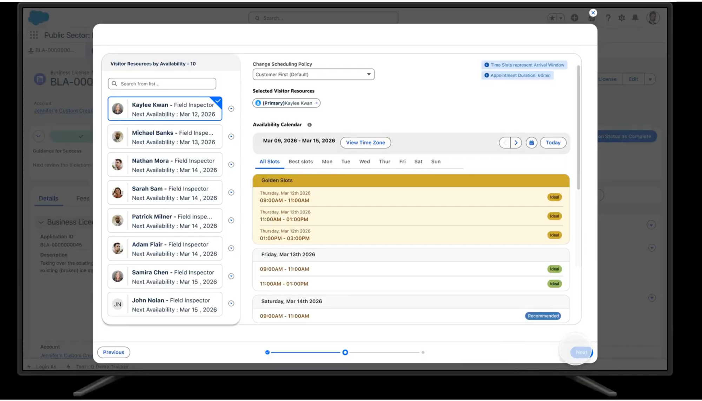
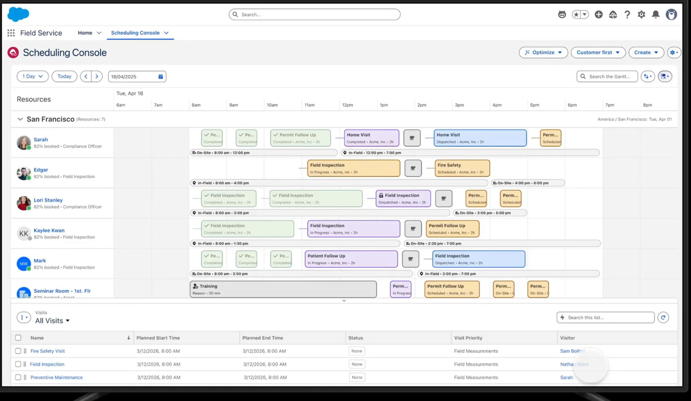

AI-Powered Automation for Alameda County IHSS
Reducing backlog, accelerating compliance, and empowering caseworkers
Out of compliance with the state
2+ hours per visit, with extensive manual note-taking and narrative creation slowing down case completion
Social workers manually determine and justify rankings for each service need without automated support
Finding regulatory thresholds and citations requires searching through dense policy documents
Difficult to identify incomplete visits, prioritize cases, and track progress on reducing backlog
Creating narratives with proper rankings and citations is the bottleneck
"How do we help caseworkers complete more visits per day so we can tackle the backlog faster?"
Comprehensive household profiles with risk levels, authorized hours, and visit history
Paste dictation directly into visit records — no manual typing
Scan and transcribe handwritten field notes instantly
AI extracts rankings, hours, and observations from unstructured text
AI suggests rankings with regulatory citations and evidence
One-click narrative creation from visit data with proper formatting
Ask policy questions, check backlog, find missing rankings instantly
View prioritized visit list and comprehensive household profiles with risk levels and visit history
Capture visit notes and scan handwritten observations in the field
Paste dictation, parse data, and generate benefits eligibility
Ask IHSS agent about exception thresholds and policy questions
Review narrative, approve rankings, and complete the visit workflow
Employee agent helps identify incomplete visits, missing rankings, and prioritize workload
Live demonstration of the complete case management workflow
Next-generation visit scheduling and dispatch capabilities
System matches available social workers by skills, certifications, location, and real-time availability — no manual scheduling needed
Cancellations automatically fill with waitlisted households; delays trigger real-time rescheduling and notifications
Office staff and field workers share the same platform — full household history, visit notes, and case details visible to everyone
Completed visits instantly flow to compliance reporting, quality assurance, and billing simultaneously

Real-time worker availability with golden slots, next availability dates, and policy-based scheduling

Gantt-style timeline view with drag-and-drop optimization, resource utilization tracking, and visit list management